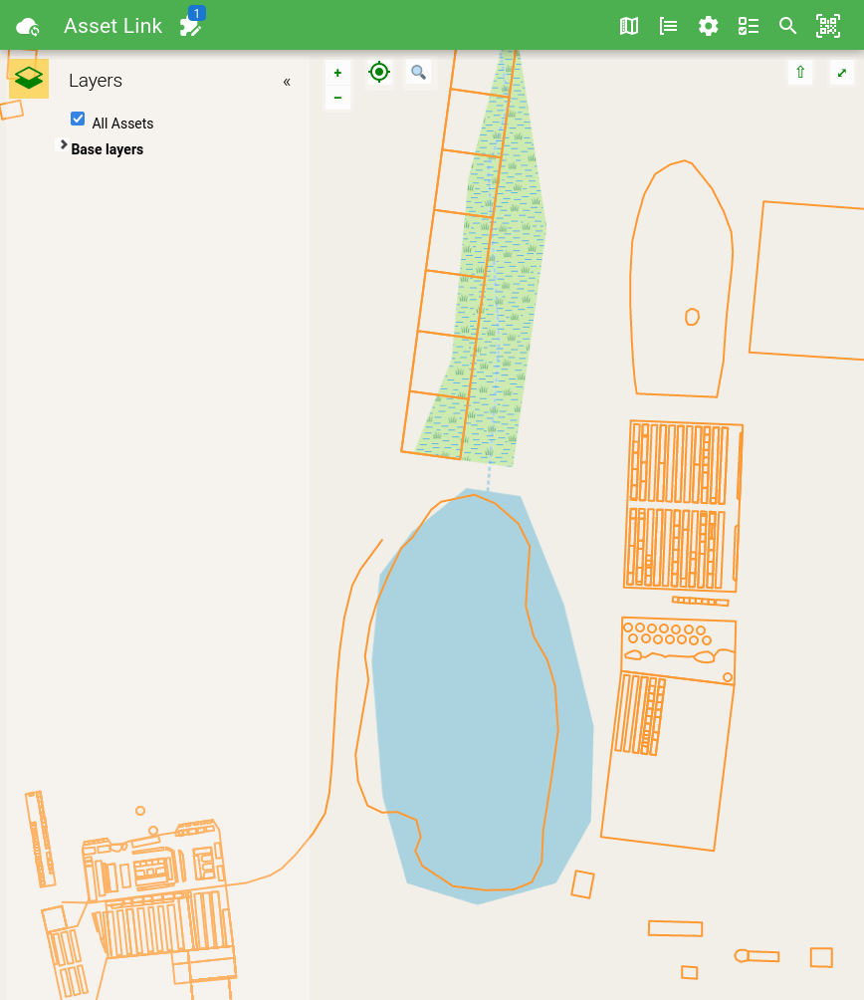

Maps can be embedded in Asset Link using the <farm-map> component. There are some limitations that are described below.
Also check out the farmOS-map readme for more details of working with the underlying library.
Quick Example
TestMap.alink.vue
<script setup>
import { createDrupalUrl } from "assetlink-plugin-api";
const onMapInitialized = (map) => {
map.addBehavior("sidePanel");
map.addBehavior("layerSwitcherInSidePanel");
const layer = map.addLayer('geojson', {
title: 'All Assets',
url: createDrupalUrl('/assets/geojson/full/all')
});
layer.getSource().on('change', function () {
map.zoomToVectors();
});
};
</script>
<template alink-route[com.example.farmos_asset_link.routes.v0.test_map]="/test-map">
<farm-map @map-initialized="onMapInitialized"></farm-map>
</template>

Limitations
Core farmOS behaviors
Currently there isn't a good way to load the core behaviors that are shipped with farmOS - as opposed to the behaviors that come with farmOS-map or custom behaviors (both of which do work). This is because the behaviors from farmOS itself rely on Drupal's system for managing Javascript dependencies and Drupal's server-side render event system to populate key settings.
Offline First
Asset Link has opted to leverage the version of farmOS-map that is vended with farmOS instead of packaging its own copy. This should reduce the total amount of data users of Asset Link end up loading, but it also means that it is possible for the map library not to be available offline if that functionality hasn't yet been used in Asset Link.
Further, lazily loaded map layers - including base layers like OpenStreetMap - will tend not to work offline. Some caching improvements may be possible, but in general this will always be a weakness since there is an inherent trade-off between what data gets precached when online and the functionality that is available later when offline.
OpenLayers API Access
farmOS-map is built upon OpenLayers, but chooses to only package the parts of OpenLayers that it uses. This means that applications which need direct access to the OpenLayers API must obtain it directly rather than through farmOS-map. In practice this means only certain kinds of maps can be built via simple .alink.vue Asset Link plugins. More complicated use-cases will require a build step. See assetlink-plugin-dev-support for more information on making Asset Link plugins that require a build step.